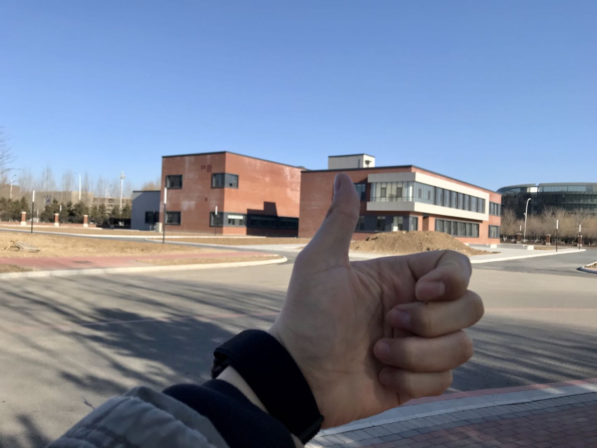

转眼之间就来到了2021，凌晨宿舍写笔记的时候，习惯性把上一条时间戳复制了下来，突然发现已经是2021了，那一刻内心才有了一丝触动。
可能是最近一段时间总熬夜，感觉自己的情感上变得比较迟钝，有时候也会很焦虑。跨年的朋友圈总是那么热闹，但是内心却怎么也高兴不起来。没有什么特别的烦恼，只是情绪很难被周围欢快的氛围调动起来。31号下午看到了博士的拟录取结果，用家人的话说也算是完美的收官。想想自己过去一年的生活，经历了很多，但仿佛也是一瞬间的事情。说起来惭愧，研究生三年只有2019年年初的时候，写了一个简单的总结，当时充满了对未来生活的无限激情，再看看现在的自己顿时觉得好失败[哭笑]。
不管如何，逝去的时光无法追回，还是要打起精神继续干活，下面把自己过去一年的生活做个综述流水账，既算是总结也是对自己的反思。
2019.12 -2020.2 这段时间忙着处理医院的数据，虽然拿到了原始数据，但是没有经过清洗，根本没有办法看。快过年的时候，整个学校基本上没有什么学生了，也只剩下研究生博士生苦逼的在干活，实验室的暖气根本难以维持室内的温度，坐在工位上时间久了双脚冰冰凉。从2019年10月份到年末，好在是谷同学不负众望拿下了博士入场券，加上数据到位，自己的心情还是比较好的。但接下来就是自己的下一步发展方向，虽然自己是一个极度逃避现实的人，等到现实摆在眼前还是得硬着头皮上。
2020.3 – 2020.5 这段时间因为疫情，只能在家干活。一开始的动力非常的好，托福课程还有单词一直非常努力的在看，科研上虽然数据是真的难清理，好在加班加点整理完毕。但是在家时间久了动力逐渐消失，很长一段时间内，直播+各种电视剧完全充斥了自己的生活。随着疫情的加重，托福GRE考试完全停摆，本来就不自信的自己更觉得未来非常的渺茫。没有论文，没有语言成绩，我用什么去争取国外的博士坑位，再加上国外疫情肆虐，真的是一言难尽。那段时间和家人聊了很多，也咨询了导师，最后还是决定留下来。其实留下来也算是意料之中的事情，很大程度上和自己的性格有关系。一方面，我极度渴望革新自己，另一方面，我又恐惧未知。这两个矛盾的心情，往往最后博弈的结果是保守，选择留下来，选择安逸。
2020.6-2020.10 确定了大致的方向，自己也不再彷徨，偶尔会患得患失，但是现实已经不允许我顾虑太多。这段时间前一小段在家里还是继续半干活半摸鱼，后边为了脱离舒适圈，选择去苏州换个新的环境改变一下心境。新国大苏研院位于苏州的工业园区，这个时候我是真的想吐槽一下东大，看看人家的周围建设。这一片周围都是很多高校的研究院，旁边是东南的软件学院研究院，还有山东大学，南京大学等学校的研究院。另外西交利物浦和苏州大学的一个校区也在这一片，不得不说南方的环境要比北方强太多了。每天早上和同学必然是巴比包子（猪肉最爱，可能还会要个馅饼），后来听闻巴比上市，我开玩笑能上市我们发挥了重要的作用。在苏州的生活记忆还是很深刻的，第一次在南方生活这么久，苏州的景点也逛了很多，吃到了很多美食（各种包子，哈哈，还有绿豆汤，鲜肉月饼，各种面等等），参加了几个博览会。所以，有机会还是应该写一篇文章回忆一下苏州生活。9月末，我们从苏州返回学校，但不幸的是当时学校没有返校审批了，无奈只能在同学家借住了三四天，后来想想不是个长久办法，打算还是回家。
2020.11 -2020.12 返回学校准备博士考试，度过了难熬的这段时间，最后终于在2020年最后一天看到了拟录取结果。
2020年到现在，疫情还在肆虐，希望自己能收拾好心情，从新出发，踏踏实实走好接下来的每一天。
